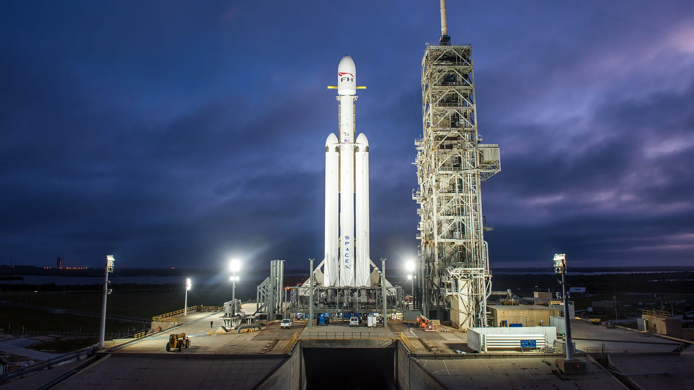
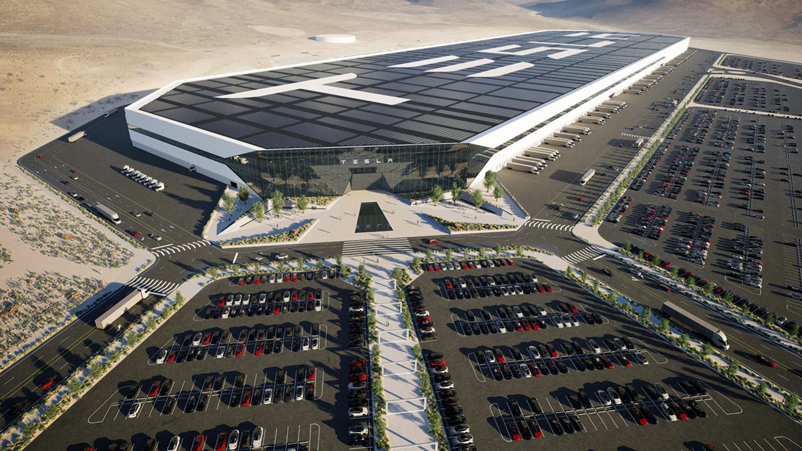
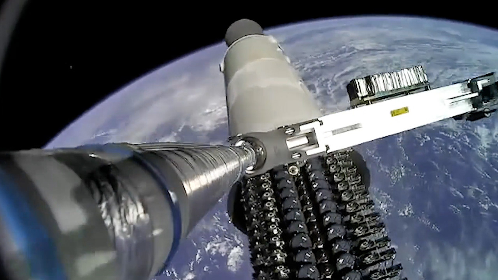

Contents
The Titan Behind Tesla
Elon Musk joined Tesla Motors in 2004 as chairman of the board after leading its Series A funding round. He later became CEO in 2008 and transformed the company from a niche electric car startup into the world's most valuable automaker. Under his leadership, Tesla launched the Roadster, Model S, Model 3, Model X, Model Y, and the Cybertruck — each pushing the boundaries of electric vehicle technology.
Tesla's mission, "to accelerate the world's transition to sustainable energy," extends beyond cars. The company produces solar panels, the Solar Roof, and the Powerwall home battery. Tesla's Gigafactories, spread across the United States, Germany, and China, represent some of the largest manufacturing facilities on Earth, producing batteries and vehicles at an unprecedented scale.
Musk's hands-on engineering approach and relentless push for innovation have made Tesla synonymous with the electric vehicle revolution. From pioneering over-the-air software updates to developing Full Self-Driving technology, Tesla continues to redefine what a car company can be.
The Starship Dreamer
In 2002, Elon Musk founded Space Exploration Technologies Corp. (SpaceX) with a bold vision: to make humanity a multi-planetary species. At a time when the aerospace industry was dominated by legacy contractors charging billions per launch, Musk set out to build affordable, reusable rockets from scratch.
SpaceX achieved historic milestones — the Falcon 1 became the first privately developed liquid-fueled rocket to reach orbit in 2008. The Falcon 9 followed, becoming the workhorse of the commercial launch industry with its revolutionary reusable first-stage booster. The Falcon Heavy, capable of carrying massive payloads, became the most powerful operational rocket in the world upon its debut in 2018.
The Starship program represents Musk's ultimate ambition: a fully reusable super-heavy-lift launch vehicle designed to carry humans to Mars and beyond. SpaceX's Starlink satellite constellation, providing global broadband internet, has already deployed thousands of satellites into low Earth orbit, generating revenue to fund the Mars mission. From landing boosters on drone ships to envisioning cities on the Red Planet, SpaceX has fundamentally changed the space industry.
The X Factor
In October 2022, Elon Musk completed his $44 billion acquisition of Twitter, one of the most talked-about corporate takeovers in history. He immediately began reshaping the platform, rebranding it to "X" in July 2023 as part of his long-held vision to create an "everything app" — a Western equivalent to China's WeChat.
The acquisition was marked by sweeping changes: massive workforce reductions, a revamped verification system with the paid X Premium (formerly Twitter Blue), the introduction of long-form posts, and the opening of the platform's recommendation algorithm as open source. Musk positioned himself as a champion of free speech, reversing many previous content moderation policies.
Whether praised or criticized, Musk's takeover of Twitter/X has been one of the most consequential events in social media history. The platform continues to evolve under his ownership, with ambitious plans for integrated payments, video content, and AI-powered features — all under the singular brand of X.
Where Mind Meets Machine
Founded in 2016, Neuralink is Elon Musk's neurotechnology venture aiming to develop brain-computer interfaces (BCIs). The company's tiny, flexible electrode threads — thinner than a human hair — are designed to be implanted into the brain by a precision surgical robot, enabling direct communication between the human brain and computers.
Neuralink's first human trial began in early 2024, with a patient successfully controlling a computer cursor using only their thoughts. The technology holds transformative potential for people with paralysis, neurological disorders, and spinal cord injuries. Long-term, Musk envisions Neuralink enabling a symbiosis between humans and artificial intelligence.
Beyond Neuralink, Musk has been deeply involved in the AI landscape. He co-founded OpenAI in 2015 before departing, and later launched xAI in 2023, building the Grok AI chatbot. His stance on AI — viewing it as both humanity's greatest opportunity and greatest existential threat — has made him one of the most vocal figures in the global conversation around AI safety and regulation.
The Empire in Pictures
Below is a gallery showcasing Elon Musk and the companies he has built.

Tesla Model S
The car that proved electric vehicles could be desirable.

Falcon Heavy Launch
The world's most powerful operational rocket lifts off.

SpaceX Starship
The vehicle designed to take humanity to Mars.

Tesla Gigafactory
One of the largest buildings in the world by footprint.

Tesla Cybertruck
The boldest pickup truck ever designed.

Starlink Satellite Deployment
Thousands of satellites bringing internet to the world.